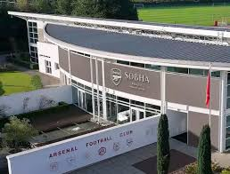

Arsenal Football Club, commonly referred to as Arsenal, is a professional football club based in Islington, London, England. Founded in 1886, Arsenal has a rich history and is one of the most successful clubs in English football. The club competes in the Premier League, the top tier of English football.
Arsenal is known for its attractive style of play, often characterized by possesion-based football and attacking football. They are also known for their strong and stable defence which is regarded as the best defencee in the world.
Over the years, Arsenal has won numerous domestic and international trophies, including 13 league titles and 14 FA Cups, making them one of the most successful clubs in English football history. The club has a passionate fan base and a strong rivalry with North London neighbours Tottenham Hotspur, known as the North London Derby.
Arsenal Success in the Last 3 years
In recent years, Arsenal has been a strong and solid team, they rose up from the shambles of the previous 2021/22 season. The immediate success came in the 2022/23 season, where they finished 2nd place in the Premier League, their highest finish since the 2015/16 season. Signings like Gabriel Jesus, Oleksandr Zinchenko and Fabio Vieira played crucial roles in Arsenal's resurgence.
In the 2022/2023 season, the English Premier League saw a new Arsenal, not an Arsenal struggling to finish top four, but an Arsenal challenging for the title. They were in a close race with Manchester City for the entire season, ultimately finishing second, just five points behind the champions. This marked a significant improvement from previous seasons and signaled Arsenal's return to title contention.
The next season, 2023/2024, Arsenal came again with another challenge, they signed Europa Conference winner Declan Rice for record fee of £100M, David Raya, an amazing goalkeeper, from Brentford, Kai Havertz from Chelsea, and Jurrien Timber from Ajax. These signings helped Arsenal push for an even stronger title challenge in which they were so close to winnning the Premier League trophy, but fell short on the final day of the competition, making them place second with just two points behind Manchester City again. This was devastating for the club and its fans.
The 2024/2025 season comes and Arsenal want to win the title again. They signed Euro Winner Mikel Merino and world-class left back/ centre back, Riccardo Calafiori. With these signings, Arsenal were determined to go one step further and win the Premier League title in the 2024/2025 season. This season, Manchester City were held back by injuries and poor, inconsistent form, but Arsenal faced a new challenge, new manager Arne Slot's Liverpool. It was a pretty dominant season for Liverpool as Arsenal weren't at their best throughout the campaign. In the end, Liverpool finished first after being in first place the whole of the campaign, Arsenal second place yet again, and Manchester City surprisingly third after a horrific season.
The 2025/2026 season looks like Arsenal's strongest attempt yet and are pushing after making 7 summer signings. Will they win the league this season? Only time will tell.
Arsenal Grounds: The Emirates Stadium
The Emirates Stadium is the home ground of Arsenal Football Club, located in Islington, London. It is one of the most iconic football stadiums in the world and has been the home of Arsenal since its opening in 2006.
The stadium has a seating capacity of approximately 60,704, making it the third-largest football stadium in England. It was designed to provide a modern and comfortable experience for fans, with excellent sightlines and state-of-the-art facilities.
The Emirates Stadium is known for its distinctive architecture, featuring a sleek and modern design with a curved roof and glass facade. The stadium also incorporates sustainable features, such as energy-efficient lighting and water-saving systems.
In addition to hosting Arsenal's home matches, the Emirates Stadium has also been used for various other events, including concerts and international football matches. It has hosted several high-profile games, including UEFA Champions League matches and England national team fixtures.
Overall, the Emirates Stadium is a symbol of Arsenal's rich history and commitment to providing a world-class experience for its fans. It continues to be a fortress for the club and a beloved venue for football enthusiasts around the world.

.jpeg)
Sobha Realty Training Centre
The Sobha Realty Training Centre is Arsenal Football Club's state-of-the-art training facility, located in London Colney, Hertfordshire. It serves as the primary training ground for the club's first team and youth academy players.
The training centre is equipped with top-notch facilities, including multiple training pitches, a gymnasium, rehabilitation areas, and medical facilities. It provides an ideal environment for players to train, recover, and develop their skills under the guidance of the club's coaching staff.
The Sobha Realty Training Centre is designed to meet the highest standards of modern football training. It features advanced technology and equipment to support player performance analysis, injury prevention, and rehabilitation. The facility also includes comfortable changing rooms, meeting rooms, and dining areas for players and staff.
In addition to serving the first team, the training centre also plays a crucial role in the development of young talent through Arsenal's youth academy. The facility provides a nurturing environment for aspiring footballers to hone their skills and progress through the club's ranks.
Overall, the Sobha Realty Training Centre is a testament to Arsenal's commitment to excellence and player development. It continues to be a hub of activity for the club, fostering a culture of professionalism and success both on and off the pitch.

The Gaffer Mikel Arteta
Mikel Arteta Amatriain is a Spanish professional football manager and former player who is the current head coach of Premier League club Arsenal. Born on March 26, 1982, in San Sebastián, Spain, Arteta had a successful playing career as a midfielder before transitioning into management.
Arteta began his playing career with Barcelona's youth academy before moving to Paris Saint-Germain. He later played for clubs such as Rangers, Real Sociedad,and Everton. Known for his technical skills, vision, and leadership on the pitch, Arteta was highly regarded during his playing days.
After retiring as a player, Arteta began his coaching career as an assistant coach at Manchester City under Pep Guardiola. In December 2019, he was appointed as the head coach of Arsenal, marking the beginning of a new chapter in his career.
As Arsenal's head coach, Arteta has focused on rebuilding the team and implementing a tactical philosophy centered around possession-based football and defensive solidity. Under his leadership, Arsenal has shown signs of improvement, with a renewed emphasis on youth development and a more disciplined approach to the game.
Arteta's tenure at Arsenal has been marked by both challenges, like placing 2nd for three consecutive years, and successes, including winning the FA Cup in the 2019-2020 season. He continues to work towards restoring Arsenal's status as a top club in English and European football and to finally win that major trophy he needs to fully revive Arsenal.
.jpeg)